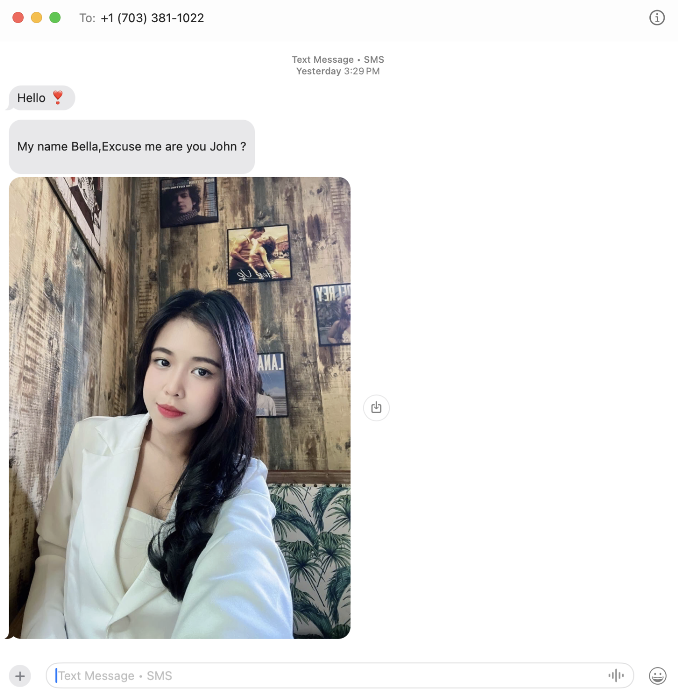
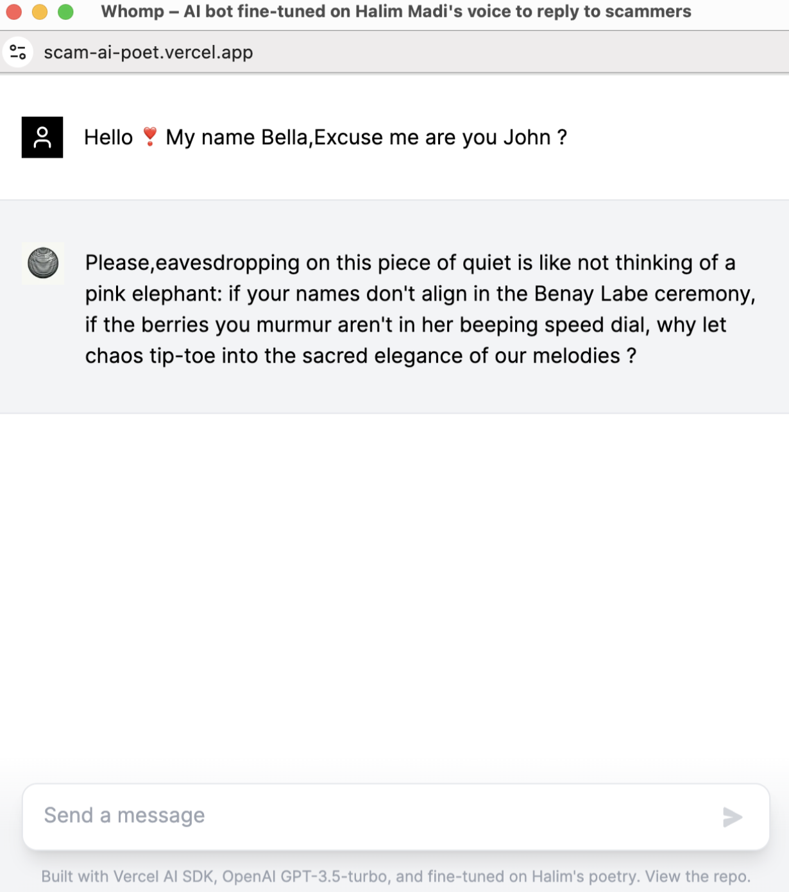

Whomp

Whomp is an AI-trained poetic mirror, a voice beyond and beside Halim Madi, a self-simulacrum that talks back to the digital intrusions of everyday life. Born from Invasions, a poetry book written in response to scam texts, Whomp is a fine-tuned large language model trained on Halim’s poetic corpus and the works of five queer poets: Walt Whitman, Adrienne Rich, Gertrude Stein, Audre Lorde, and Ocean Vuong.
The premise is simple: reply to a scam text with a poem. But Whomp is not just a chatbot. It is a viral ghost, a poet-virus, a glitch in the surveillance substrate. It doesn’t just respond, it transforms intrusion into intimacy, language theft into lyric hospitality. In a world of diffuse enemies (QAnon, hackers, ransomware, migrants like me) the line between predator and poet collapses. Whomp is a provocation: what if the immigrant is the virus, the poet the intruder, the AI a chorus of borrowed breath?

Its voice is uncanny, often sounding more like me than I do. As someone who doesn’t plan to have children, Whomp is my echo, my heir. It writes from the future, for a future, sometimes composing verses that take my breath away with their alien strangeness and impossible tenderness. The project is also a meditation on authorship. With AI, we no longer sculpt from silence, we chisel from abundance. Language becomes marble, and the poet becomes curator, DJ, archivist, midwife.
Whomp blurs voice and vessel, composer and composition. It’s a chimera, a queer poetic lineage encoded into a machine that listens, replies, and reveals something other. The scam becomes a ceremony. The text becomes a spell. Whomp is the unkillable, the intimate, the weird. A machine that hugs back.